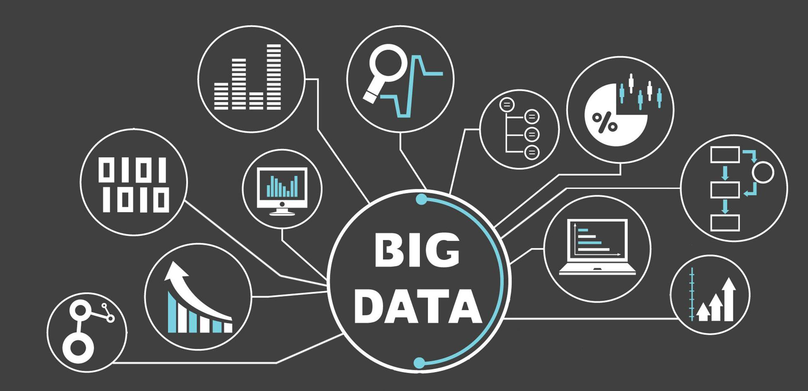

| Big Data | Entorno tecnológico | Avance en algoritmos |
|---|---|---|
| Es un término evolutivo que describe cualquier cantidad voluminosa de datos estructurados, semiestructurados y no estructurados que tienen el potencial de ser extraídos para obtener información | Suma total de un conocimiento que tiene una forma de hacer las cosas, es decir, como se diseran, como se producen, distribuyen y se venden los bienes o servicios | Conjunto ordenado de operaciones sistemáticas que permite hacer un cálculo y hallar la solución de un tipo de problemas |
|  |